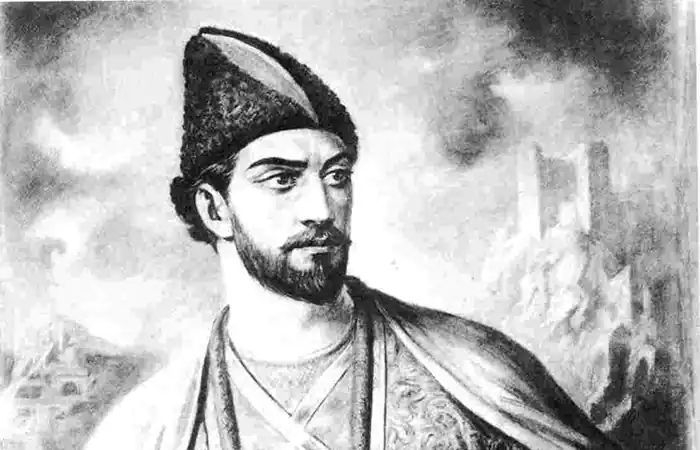

ШОТА РУСТАВЕЛІ
(pp. народж. і смерті невідомі)
Шота Руставелі — видатний грузинський поет XII століття, автор славнозвісної поеми "Витязь в тигровій шкурі" (інша назва "Витязь в барсовій шкурі"). Невідомо точно де,— чи в кара-язькому степу, над притоками Кури, чи в долині месхетських гір, чи під склепінням феодального замку вельможних Багратіонів,— народилася дитина, якій доля дала безсмертя. Народні перекази не одностайні щодо походження великого поета. Одні казали, що він родом із вельможної сім'ї, інші розповідали, що багатий дядько взявся виховувати бідного небожа, осиротілого ще з дитинства. Можливо, він народився в кінці 60-х або на початку 70-х років. Вірогідною датою його народження є 1166 рік. Як свідчать далі народні перекази, дядько постарався дати небожеві досконале для того часу виховання. Шота вивчився в одному з найбільших монастирів Месхетії — Зарзимі й був визнаний гідним продовжувати навчання в тодішній найвищій школі — в кахетинській академії в Ікалто. Академія в Ікалто, заснована царем Давидом Будівником, була визначним осередком того часу. Вона згуртувала навколо-себе цілий ряд вчених і філософів, які не тільки пересаджували на грузинський ґрунт класичну мудрість Платона та Арістотеля, але й продовжували та розвивали філософську діяльність, що завмерла на той час у Візантії під тиском християнської реакції. Умови Грузії того часу давали більше волі вченим — продовжувачам класичної грецької філософії, що й сприяло появі таких філософів, як Іоанн Петріці, який познайомив грузинський народ з неоплатоніком Проклом, переклавши його "Союз", і який дав сам низку видатних філософських творів, ставши одним із найвидатніших представників грузинської філософської думки XII століття. На чолі цієї плеяди філософів і вчених стояв Арсеній Іколтоелі, який, за легендою, був учителем Шота в академії. Тут і почали формуватися зерна того неоплатонівського світогляду, що зміцніли в душі молодого поета під час його подальшого навчання в афінських та олімпійських монастирях Греції, куди виїхав Шота після закінчення академії в Ікалто. Важко сказати, що в цих переказах про шкільні роки Руставелі є правдою, а що створено народною уявою, проте сама поема свідчить про високу філософську освіченість поета, який був на рівні найпередовіших думок свого часу. З поеми видно, що подальша доля поета була міцно пов'язана з двором цариці Тамар, яка довершила процес об'єднання Грузії в одну централізовану державу, приборкавши самостійність дрібних феодальних володарів і створивши підвалини для того розквіту старої грузинської літератури, яка, крім славнозвісного Руставелі, мала ще таких поетів, як Чахрукадзе і Шавтелі, оди яких до цариці Тамар та її чоловіка Давида Сослані збереглися дотепер. Руставелі у своїй поемі згадує про також колись написані ним "непогано добрані оди" на славу Тамар, але ці твори Руставелі не збереглися. Професор Павел Інгороква перевірив, хто виїздив з Грузії до Єрусалима у Хрестовий монастир. Легенда вказує на єдиного славного грузина, близького до царського роду і до самої цариці Тамар, тодішньої володарки могутньої Грузинської держави,— на її поета Шота Руставелі, себто Шота Руставського (той, хто походить з Руставі чи є володарем Руставського замку). Селищ із такою назвою є в Грузії кілька. Одне з них — у східній провінції, яка має стародавню назву Месхетія. Є й неподалік Тбілісі село Руставі. У XII столітті воно було феодальним володінням роду еретсько-руставських Багратіонів — однією з гілок династії Багратіонїв, яка тоді правила Грузією. Літописи, згадуючи про власників міст Ереті та Руставі — про цю провінційну парость царського роду, відзначали придворну кар'єру, яку зробив за часів цариці Тамар один з представників руставських Багратіонів — Шота: він — єдиний, хто на початку ХНІ століття мав у Грузії почесний титул мечурчлет — ухуцесі. Про нього збереглися певні історичні відомості, біографічні факти. За походженням він був з Мцсхетії, але його предки були вже месхами, як то автор каже в прикінцевих строфах "Витязь в тигровій шкурі" — "так пишу я, месх незнаний, родом з селища Руставї". Дещо у відомій біографії Шота Багратіоні збігається з тим, що твердять про автора славетної поеми, народні перекази й слова самої поеми, дещо не збігається. Професор Інгороква вказує на сваволю переписувачів книг, які залюбки додавали щось своє до переписуваного. Так було й з текстом поеми Руставелі "Витязь в тигровій шкурі". Шота Руставелі стояв близько до центру грузинського політичного життя, а також політичного міжнародного життя, яким був двір цариці Тамар. У свою поему він вклав історичний досвід, свідком і учасником якого був сам. Взагалі, головне джерело свідчень про нього — пролог поеми, присвячений цариці Тамар (1184-1213), у якому Руставелі возвеличує і оспівує царицю і її чоловіка Давида Сослані. Десь близько 1187 року — не раніше 1184 і не пізніше року 1207— Шота створив свого "Витязя в тигровій шкурі". У тексті поеми є ряд історичних та літературних вказівок, що дають змогу більш-менш точно визначити ті роки, коли вона могла бути написана. "Витязь в тигровій шкурі" мав бути написаний, в усякому разі, до 1213 року — до року смерті Тамар, що її так гаряче оспівує поет. Народна легенда оповідає, що поет був відзначений Тамарою, яка висунула його на значну придворну посаду царського бібліотекаря. Коли Руставелі приніс Тамар свого "Витязя в тигровій шкурі", то цариця, вшановуючи поета, дала йому на відзнаку золоте перо, щоб той носив його на шапці. З цим пером і зображують Руставелі всі художники. Поет нібито закохався в царицю і не зміг приховати своїх почуттів. Тамар розгнівалася, Шота повинен був тікати з батьківщини. Притулок він знайшов у Єрусалимі, в монастирі св. Хреста. У 1960 році було встановлено, що Шота реставрував і розписав грузинський монастир св. Хреста. Він, мабуть, став ченцем цього монастиря, але монастирська братія не забула про значну роль, яку відіграв їхній брат на далекій батьківщині, і в пишних шатах його було змальовано на надмогильній фресці, і бучним титулом візіра було оздоблене його ім'я в заупокійній згадці. Рік смерті Шота Руставелі невідомий, скоріше за все десь між 1212-1216 роками. Знайдена в Хрестовому монастирі фреска, а також заупокійна згадка в монастирській книзі — ці два документи дають підстави більш-менш певно твердити, що автором славнозвісної поеми був Шота Багратіоні. На фресці грузинською мовою написано, що похований Шота просить Бога зласкавитися над ним, а зображена там людина в грузинському одязі світського вельможі — єдиний правдивий портрет великого грузинського поета. "Витязь у тигровій шкурі" "Витязь у тигровій шкурі" — не перший твір Руставелі: він сам зізнається, що продовжує оспівувати ту, котру оспівував і раніше. Поема позначена високою творчою зрілістю автора. У пролозі два рази згадується автор поеми Руставелі (точніше Руствелі), що означає володар Руставського замку або "виходець із Руставі". Ім'я поета — Шота засвідчено в іконографічних літературних пам'ятках, починаючи з XIII століття. "Витязь в тигровій шкурі" — поема про любов і дружбу. Її сюжет розгортається на великих географічних просторах, охоплює значні території; персонажі поеми — представники різних народів (в тому числі й вигаданих). Події відбуваються динамічно й легко. Автор, вміло користуючись прийомом сюжетного маскування, правдиво зобразив різноманітну і складну дійсність Грузії XII століття, виказав свої релігійно-філософські та соціально-політичні погляди. Незважаючи на складний сюжет, "Витязь в тигровій шкурі" — композиційно довершений, поетичний твір, у якому із суворою симетричністю поєднуються два основні цикли розповідей — індійський і арабський. В розвитку сюжетної дії Руставелі глибоко розкриває характери персонажів, їхній багатий духовний світ. Поглиблена психологічна характеристика героїв і яскраве зображення внутрішньої суті явищ — риси творчого новаторства Руставелі. Він створив борців за торжество справедливості й щастя. Персонажі поеми являють собою образи людей того часу. Героїню поеми красуню Нестан-Дареджан, цнотливу й розумну, охоплює дух бунтівного протесту, коли вона дізнається, що її чекає шлюб з нелюбом. Вона мужньо витримує неволю в Каджетській вежі, що є символом тиранії. Боротьба трьох витязів-побратимів за її визволення увінчалася повною перемогою: Каджеті зруйновано, Нестан-Дариджан визволено із "щелепи змія", справедливість торжествує. Оптимістична ідея перемоги справедливості, добра над злом лежить в основі поеми: людина може добиватися повного щастя на землі. Шота Руставелі розрізняє три форми любові: 1) "божественна", найбільш висока; 2) возвеличена земна любов, за Руставелі — найбільш глибоке людське почуття; 3) груба, розпусна любов — її автор категорично заперечує: Незбагненна таємниця є в міджунуровім коханні, І до нього не рівняти любодійництва погані; Хіть — одне, кохання — інше, поміж них безодні хладні,- їх не плутайте, вслухайтесь в ці поради, мною дані! Теорію любові, викладену в пролозі, Руставелі творчо обґрунтовує в самій поемі. Розуміння любові пов'язане з його теорією поезії, також представленої в пролозі: Славлю я любов високу, душ піднесених потугу, Що її не вкласти в слово, нашу мову недолугу. Дар небес — таке кохання, неземне стремління духу,- Хто до нього прагне, мусить внести горе, злидні й тугу. Вважаючи поезію "гілкою мудрості", поет приписує їй божественне, пізнавальне значення. Любов лежить в основі сім'ї і подружнього щастя. Поет різко засуджує насильницькі дії чоловіка щодо жінки. Суспільно-політичні умови, що склалися в Грузії, сприяли розвитку цієї ідеї. Відомо, що грузинським жінкам не був властивий гаремно-замкнутий спосіб життя, як в інших країнах Кавказу. Руставелі, всупереч західноєвропейській тогочасній поезії, проповідує рівні права жінки з чоловіком і чоловіка з жінкою. Він звеличує вірність і витривалість людини в усіх випробовуваннях, в яких перевіряється дружба. Існує думка, що в поемі Руставелі над мотивами любові панує мотив братерства й дружби. Дійсно, у "Витязі в тигровій шкурі" дружба відіграє важливу роль, іноді здається, що вона висунута на перший план.